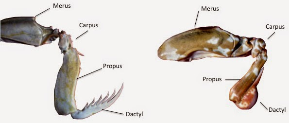

Fatos sobre o Stomatopoda
Informações Gerais
Stomatopoda (ou estomatópode), chamado popularmente de tamarutaca ou de lacraia-do-mar no Brasil, é uma ordem de crustáceos marinhos que agrupa cerca de 400 espécies. Ela é caracterizada principalmente pela morfologia da segunda pata torácica, que é modificada em apêndice subquelado, lembrando uma pata de louva-a-deus.

| Reino: | Animalia |
|---|---|
| Filo: | Arthropoda |
| Subfilo: | Crustacea |
| Classe: | Malacostraca |
| Subclasse: | Hoplocarida |
| Ordem: | Stomatopoda |
Os olhos mais incríveis da natureza
Os olhos destas criaturas, até o que se sabe, são os mais complexos do reino animal. Eles possuem filtros naturais especiais que são muito sensíveis à Luz Circularmente Polarizada (algo que nossos olhos identificam como uma névoa), e tem a capacidade de transformá-la em comprimentos de luz linear.
Além disso, o corpo dos machos é um refletor natural de LCP, e eles se utilizam desse painel que é o seu exoesqueleto para comunicar-se com as fêmeas por linguagem visual e corporal. Os olhos das tamarutacas possuem 16 fotorreceptores, são sensíveis aos raios UV, e capazes de enxergar infravermelho.

Perfurador e esmagador
Devido a uma diferença anatômica entre seus apêndices, a lacraia-do-mar pode ser classificada em dois grupos: os que têm ataque perfurador ou esmagador. Por isso, são considerados um dos animais mais fortes e velozes do planeta, por terem um ataque rápido como uma bala e forte como um touro.
O stomatopoda possui dois apêndices bem desenvolvidos (semelhantes a um martelo), chamados de Porretes de Dáctilo. Com essas “super patas”, o animal espanca e esmaga suas presas em uma intensidade de aproximadamente 60 kg/cm², daí o motivo de um de seus nomes ser lagosta-boxeadora.
Além da enorme potência de seu soco, esse animal consegue movimentar seus apêndices tal qual um tiro de arma de fogo: seu golpe pode chegar a uma velocidade de 720 km/h. Curiosamente, tanto a força quanto rapidez do ataque, não danificam sua estrutura corporal.
